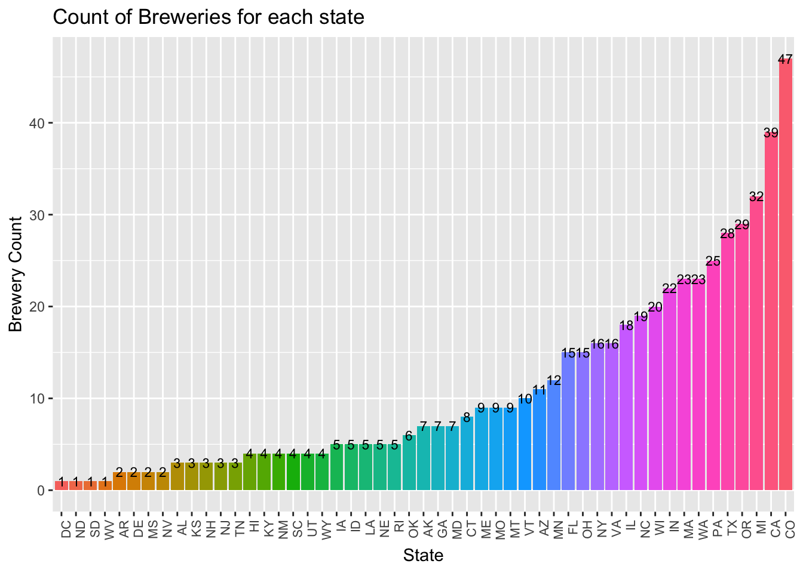
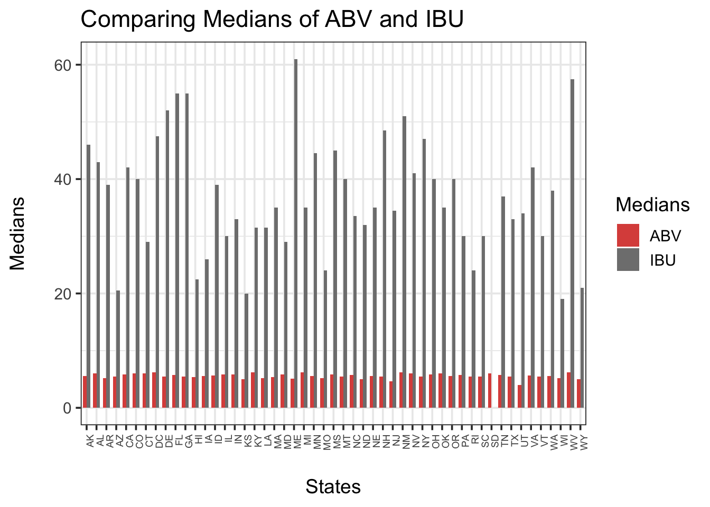
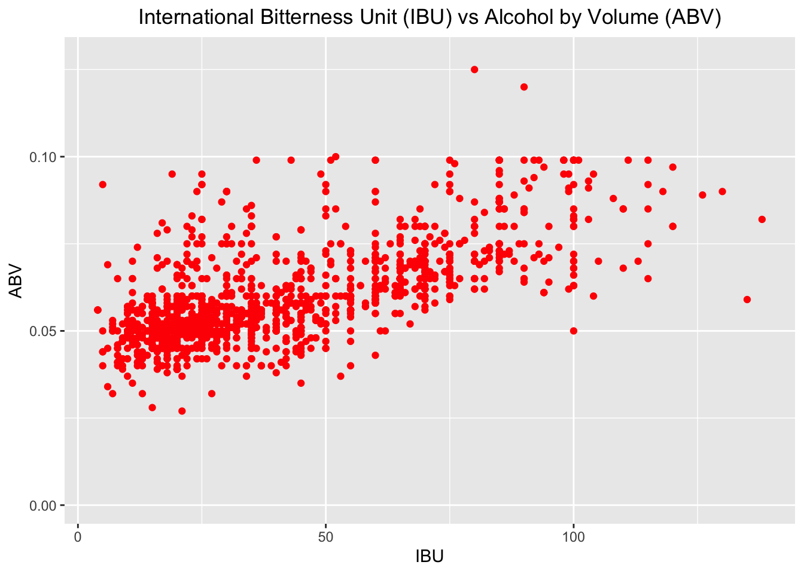
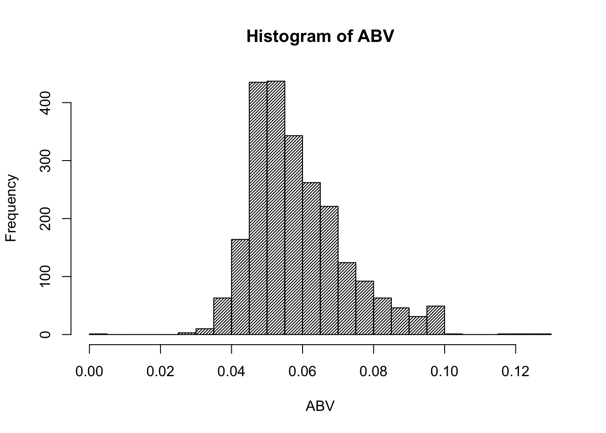

In this report, we explore beers and breweries datasets for the 51 states in the US. The steps and procedures taken in this analysis are stipulated below. We successfully merged the two datasets Beers dataset which contains a list of 2410 US craft beers to the Breweries dataset containing 558 US breweries.
In this section, we address the research questions put together on these two datasets. The questions are numbered 1 to 7.
We answer this question by using count function in base to count the number of breweries grouped by “state”. This creates a dataframe named df_count with two columns State which is the State name and Breweries which is the number of breweries in a given state. Each row represents one State. Colorado has the highest number of breweries {47} where as Washington DC, South Dakota (SD), North Dakota (ND), and West Virginia (WV) tie for the least amount of breweries each with just 1.

we merge df_beers and df_breweries dataframes by Brewery_ID using merge command for base R and assign the new dataframe to df_breweries_and_beer. We use head() and tail() to print the first and last 6 rows of the newly created df_breweries_and_beer dataframe respectively.
As shown in the code block below returns the summary of the number of NA’s per column. International Bitterness Units of beer (IBU) has the highest number of NA’s of all the available variables which is 1005.
## [1] "Brew_ID : 0"
## [1] "BeerName : 0"
## [1] "Beer_ID : 0"
## [1] "ABV : 62"
## [1] "IBU : 1005"
## [1] "Style : 0"
## [1] "Ounces : 0"
## [1] "BreweryName : 0"
## [1] "City : 0"
## [1] "State : 0"This code block then computes the median alcohol content(ABV) per state and stores the result in vector abv. It also computes median International Bitterness Units of the beer (IBU) and stores the result in ibu. Then plots a grid bar charts to comparing median ABV and median IBU in each of the 51 States.

In this code block, we identify Colorado (CO) as the State with the maximum alcoholic beer with an ABV of 0.128 and Oregon (OR) as the state with the most bitter beer with an IBU of 138.
## [1] "The state with the beer with maximum alcohol is -> CO with an ABV of 0.128"## [1] "The state with Most bitter beer is -> OR with IBU of 138"There is a positive correlation between ABV and IBU as shown in the regression trend line in the scatter plot below. IBU increases with an increase in ABV.

6. Comment on the summary statistics and distribution of the ABV variable.
To get the summary statistics of ABV by Volume variable, we are using summary function. 